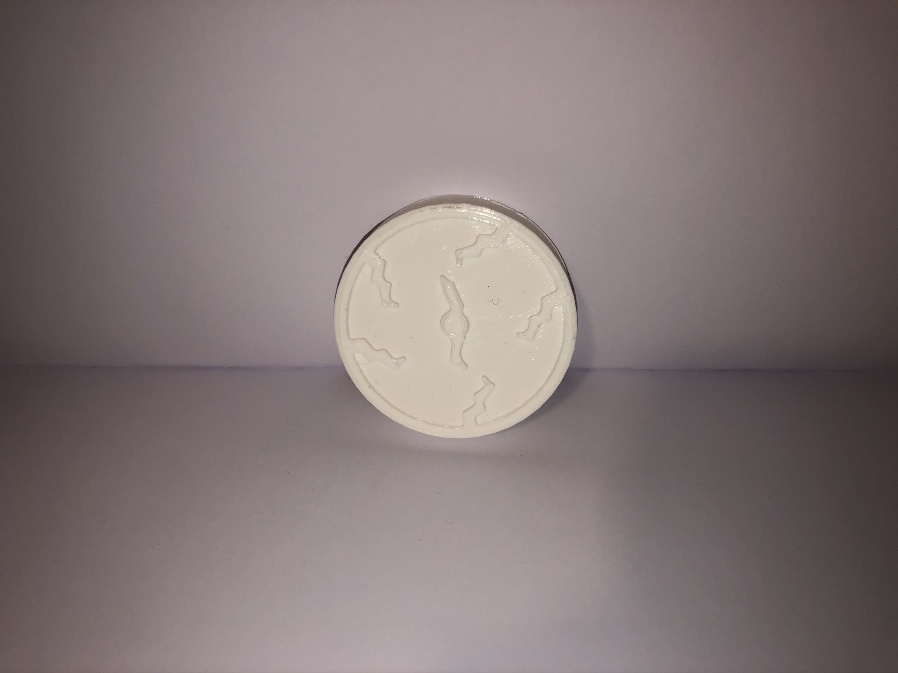
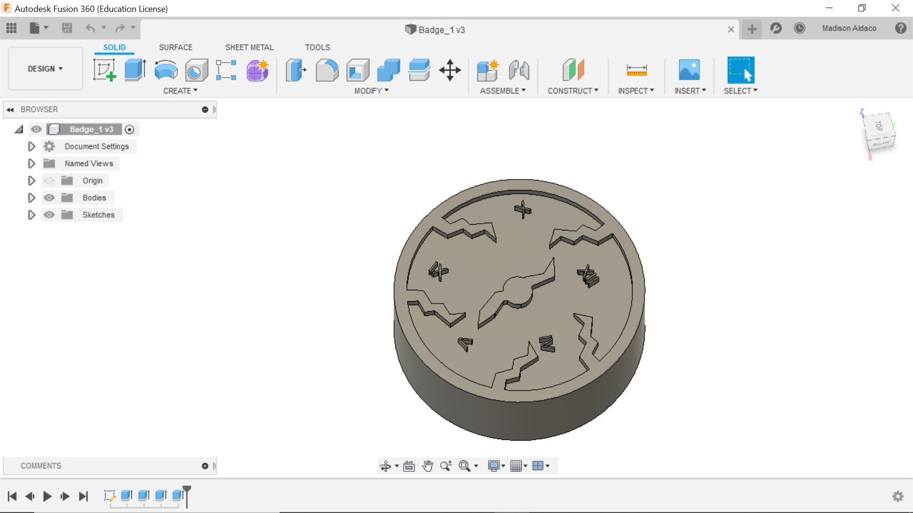
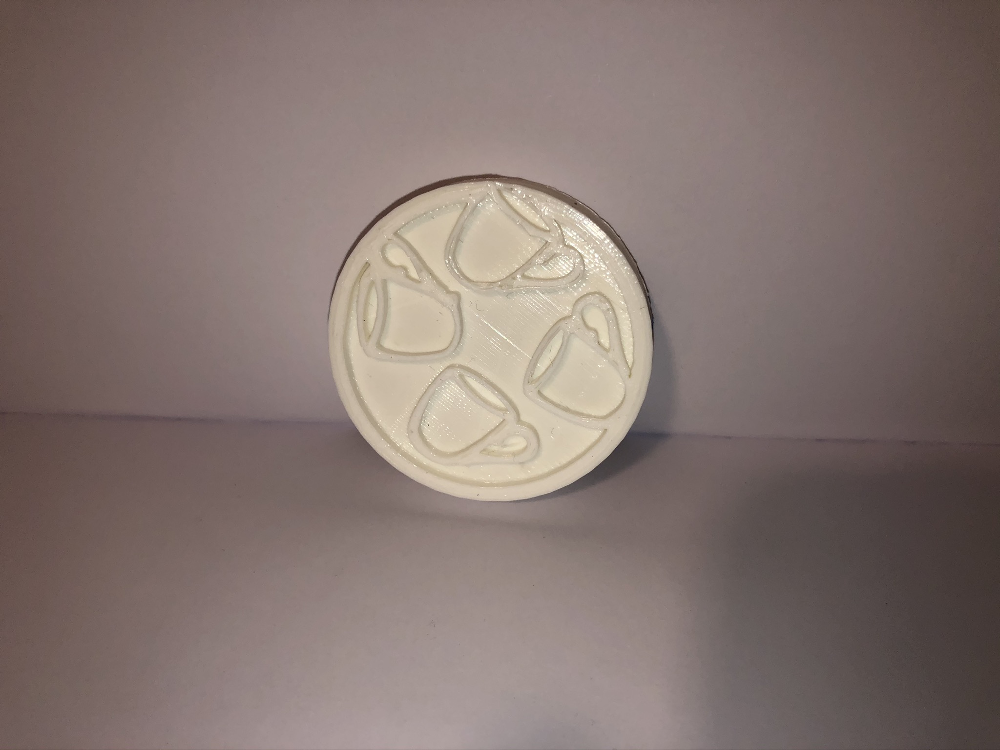
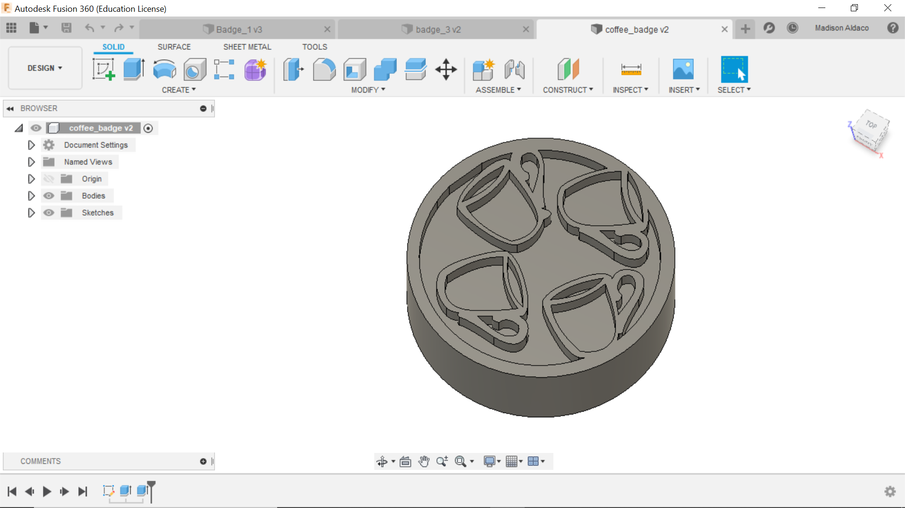

Final Project
Sacrifices
The Story
200 years from now, it has been discovered by a young historian that college students of the past may have endured many more hardships during there journey towards their degree. Students were made to make many sacrifices in order to graduate, no matter what the cost was. This meant ignoring their health, loved ones, sanity, and more. As this historian discovers more and more artifacts, similar to medallions, she realizes they were all needed to be collected in order for these past students to graduate, and who knows how many other sacrifices exist that have not been uncovered.
The Adderall Medal
This medal seems to indicate the one sacrifice involved being desperate enough to have to use enhancing drugs to finish projects and focus through exhaustion.
 The Time Medal
With a smashed watch face design, this medal indicates the losing of time, wether free time or time to finish important assignments. It also represents the lose of any free time a young student would desperately want.
 The Coffee Medal
This medal refrences the substitution of meals for coffee, no matter the lasting hunger and health effects. The coffee had to be consumed regularing and above any other types of nutrients.